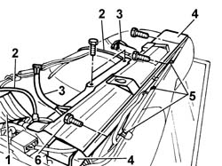
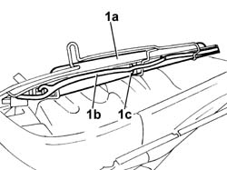

7050N13 REAR SEAT CUSHION CABLE HARNESS - R.R. WITH CUSHION REMOVED
- Path
- Procedures > 70 FITTINGS > 7050 REAR SEATS > 7050N COMFORT REAR SEAT FUNCTIONS > 7050N13 REAR SEAT CUSHION CABLE HARNESS - R.R. WITH CUSHION REMOVED
- Kind
- repair procedure (removal / refitting; the operation number is the code)
- Applies to
- all engines; all production periods
- Interactive page
- https://sloeber94.github.io/elrnDB-lThss/en/#/841003032
Applies to: all engines; all production periods
 Removing
Removing
 Refitting
Refitting1. Move the rear cushion lower vibration restricting band aside.
2. Release the rear cushion breathers.
3. Disconnect the pneumatic pipes for the electro-pneumatic control units for the rear cushion and for the pumps.
4. Disconnect the electrical connections for the rear cushion electro-pneumatic control units.
5. Cut the cushion cover retaining rings.
6. Undo the fixing bolts and remove the bracket complete with electro-pneumatic control units and pumps.

Applies to: all engines; all production periods
1. Lift up the bracket securing the rear pumps and control units, release the wiring (1b) from the bands (1c) and remove it.

Applies to: all engines; all production periods
Refitting
RemovingFit the mounting bracket for the rear pumps and control units and secure the wiring to the bands.
Fit the rear cushion cover on the upholstery.
Secure the cover using new retaining rings.
Fit the bracket complete with control units and pumps.
Connect the electrical connections for the rear cushion massage control units.
Connect the pneumatic pipes for the electro-pneumatic control units for the rear cushion and for the pumps.
Reposition the rear cushion breathers.
Reposition the rear cushion lower vibration restricting band.